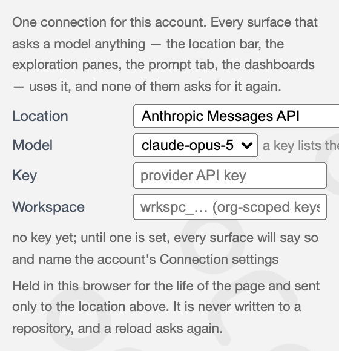
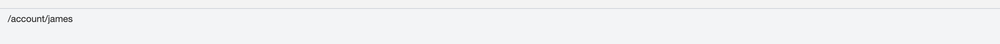

Overview
One question, several repositories, one answer. The interface tells you what it would read before it reads anything, and one press authorises the run. A model chooses every query, but it is never given a credential and never given a way to write.
There are two ways in, and they do the same thing:
- The exploration pane — a tab at the foot of your account page's left margin, marked with the triple. Choose the repositories from a list, type the question, and read the answer in the pane. This is the one to use when the answer is long, when you want the transcript beside it, or when you want to draw from what came back.
- The location bar — type the question into the one control that is on the screen before anything has been opened, naming the repositories in the line itself. Quicker, and the answer is folded under the bar.
Both run the same analysis under the same budget and record it in the same place. The rest of this page covers the exploration pane first and the location bar after it.
Before you start

The exploration pane
The left margin of your account page is a strip of icons. The last one, set apart below the rest, is the triple — three nodes and the edges between them. Press it.


Step 1 — Find the location bar
The location bar is the last band of the chrome and is present on every page. On a long page it sits below the fold, so scroll to the bottom.

/account/james — and, to start with, nothing else. Nothing is
addressed yet.Step 2 — Address the workspace
The bar routes what you type to whatever it is addressing. A path still navigates, as it always did. Anything else is an instruction, and an instruction needs a destination — so point the bar at the workspace first:
goto workspace
goto something first, or click into
it". This is the step most easily missed, because the bar looks ready
before it is.
Step 3 — Ask, naming the repositories
Type the question. It must name the repositories it is about — the workspace itself knows none, and a question with nothing to read is not run.
compare the concepts present in james/finto and james/fibo
There are three ways to name one, and you can mix them in a line:
| Written as | Example | Notes |
|---|---|---|
| Qualified | james/finto |
Anywhere in the line, as a whole word. |
| A link or a path | https://dydra.com/james/finto/account/james/repositories/finto |
Paste either — what the address bar shows is as good as a URL. |
| A bare name after a cue | across finto, fibo and bob/parts |
The cue words are in, into, from, against, across, on, over,
within, about, of. A list stays open across a comma or
and, and closes at anything else — so a cue cannot
reach across a whole sentence. |
Step 4 — Read what the press authorises, then press
Press Enter and nothing runs. The bar answers with what it would read, and offers one button, named for the number of repositories.

Press show for the rest of it. This is the grant, in the terms the run itself holds:

mcp
repository, and that it can be stopped while it runs.The budget grows with the number of stores: six rounds plus ten for each repository, to a ceiling of forty, and three calls per round. Two repositories is 26 rounds and 78 calls; one is 16 and 48.
Step 5 — The answer
The answer appears under the bar and can be read there or copied. It ends
with a line the interface writes, not the model: the model as served
— which is not always the one you asked for — how many calls each repository
took, the date, and, if the exploration used up its rounds, that it was
stopped at the limit. Below that are the links to where the run was recorded,
one per repository, in your-account/mcp.
doc/analysis-live/, including one where the round budget ran out
and the report was written anyway.
If it refuses
| What it says | What to do |
|---|---|
nothing is addressed — goto something first, or click into it |
Step 2. Type goto workspace. |
| It names your account's Connection settings | No key is set. See Before you start. |
| the workspace names no repository, so there is nothing to read | Your line named none that could be recognised. Name one as
account/repository, or after a cue word. |
| One sentence about each name it could not read | A repository you named is not one this account may read. The whole line is refused, not just that name — answering the readable half would answer a question you did not ask, about one store when you named two, and the answer would not say so. |
| sign in before rearranging the interface | The session has lapsed. Sign in again. |
What the model is and is not given
- One tool per repository you named, and nothing else. It cannot reach a repository you did not name, whether or not you may read it.
- The read-only operation set. Nothing it can call writes.
- No credential. Each call is carried by the interface under your token.
- A budget it is told about: it knows how many rounds it has and is asked to leave itself one to write in.